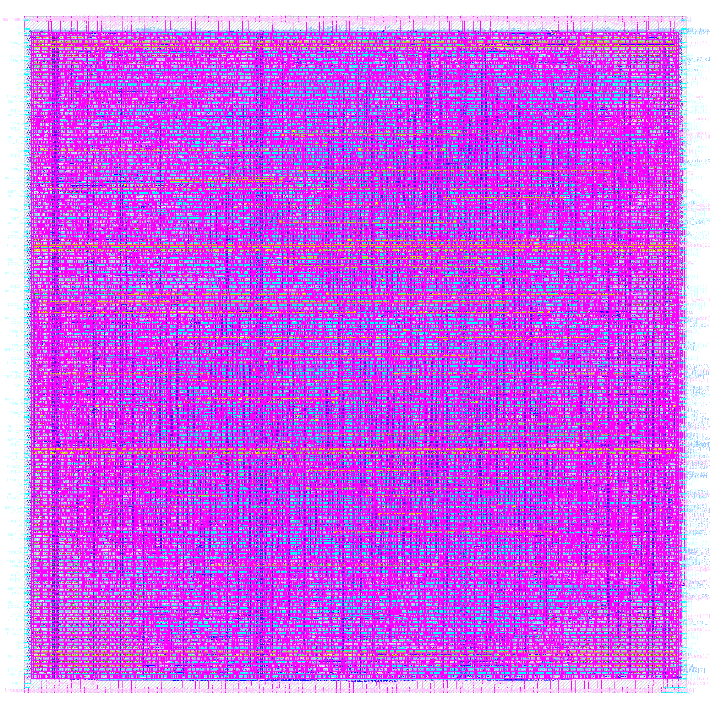
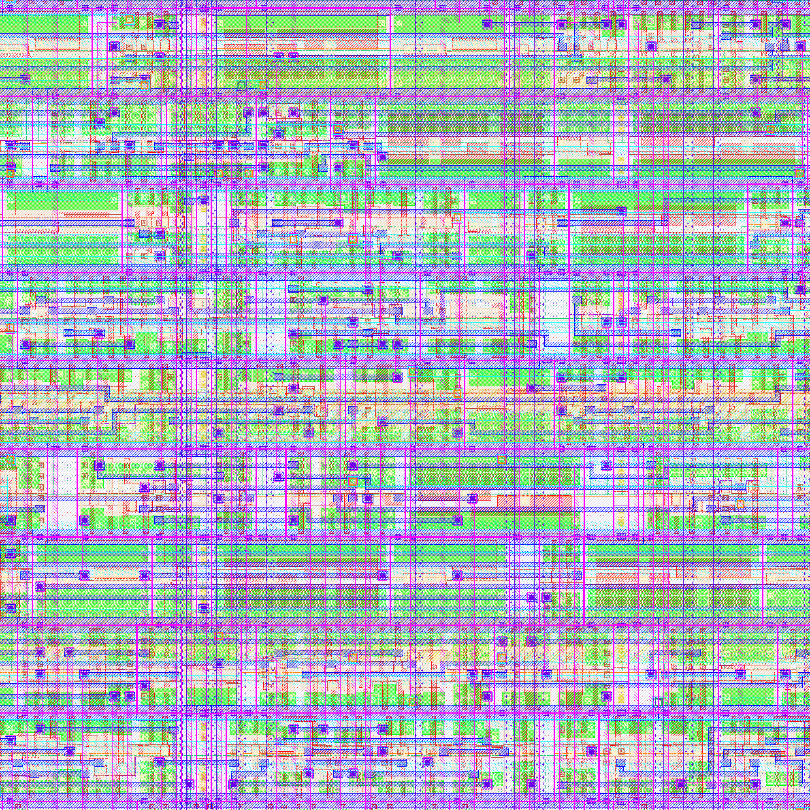

RISC-V core, full synthesis-to-GDSII flow on OpenLane / Sky130, multi-clock PPA characterization.
| Clock Target | Status | Runtime | Utilization | WNS | Actual Critical Path | Routing Viol. | DRC Viol. |
|---|---|---|---|---|---|---|---|
| 25ns (baseline) | FLOW COMPLETED | 0h27m30s0ms | 46.18% | 0 ns | 1.5 ns | 0 | 0 |
| 20ns | FLOW COMPLETED | 0h27m55s0ms | 46.18% | 0 ns | 6 ns | 0 | 0 |
| 15ns | FLOW COMPLETED | 0h28m9s0ms | 46.18% | 0 ns | 5.77 ns | 0 | 0 |
Rendered directly from the final signed-off GDSII via KLayout — this is the same die for all three runs, since only the clock target changed between them, not the floorplan.

Complete 0.254 mm² die at full extent. The dense color blocks are all ~32,000 physical cells and their routing, compressed into one view — this is normal at this zoom level, real fabricated die photos look the same way.

A small region near the die center, zoomed in enough that individual standard-cell rows and metal routing tracks are actually distinguishable, in Sky130's real layer color scheme.
| Corner | Internal | Switching | Leakage | Total (est.) |
|---|---|---|---|---|
| Fastest (best-case) | N/A | N/A | N/A | N/A |
| Typical | 0.00795 uW | 0.00807 uW | 7.84e-08 uW | 0.01602 uW |
| Slowest (worst-case) | N/A | N/A | N/A | N/A |
| Cell Type | Count |
|---|---|
| AND | 405 |
| DFF | 91 |
| NAND | 226 |
| NOR | 171 |
| OR | 1045 |
| XOR | 388 |
| XNOR | 113 |
| MUX | 2709 |
| Cell Type | Count |
|---|---|
| DecapCells | 10038 |
| WelltapCells | 3348 |
| DiodeCells | 403 |
| FillCells | 5703 |
sky130_fd_sc_hd__o22ai_2 1
sky130_fd_sc_hd__o2bb2a_2 3
sky130_fd_sc_hd__o311a_2 33
sky130_fd_sc_hd__o31a_2 17
sky130_fd_sc_hd__o31ai_2 2
sky130_fd_sc_hd__o32a_2 2
sky130_fd_sc_hd__o41a_2 1
sky130_fd_sc_hd__or2_2 299
sky130_fd_sc_hd__or2b_2 22
sky130_fd_sc_hd__or3_2 107
sky130_fd_sc_hd__or3b_2 16
sky130_fd_sc_hd__or4_2 28
sky130_fd_sc_hd__or4b_2 10
sky130_fd_sc_hd__xnor2_2 79
sky130_fd_sc_hd__xor2_2 40
Chip area for module '\picorv32': 107077.696000
62. Executing Verilog backend.
Dumping module `\picorv32'.
Warnings: 307 unique messages, 307 total
End of script. Logfile hash: 6c22ef1f94, CPU: user 13.02s system 0.18s, MEM: 64.05 MB peak
Yosys 0.30+48 (git sha1 14d50a176d5, gcc 8.3.1 -fPIC -Os)
Time spent: 64% 2x abc (23 sec), 10% 41x opt_expr (3 sec), ...
skew_report_end summary_report =========================================================================== report_tns ============================================================================ tns 0.00 =========================================================================== report_wns ============================================================================ wns 0.00 =========================================================================== report_worst_slack -max (Setup) ============================================================================ worst slack 14.17 =========================================================================== report_worst_slack -min (Hold) ============================================================================ worst slack 0.16 summary_report_end [WARNING] Did not save OpenROAD database! Writing SDF to '/openlane/designs/picorv32a/runs/first_run/results/synthesis/picorv32.sdf'…
Using 1e-03 for current... Using 1e-09 for power... Using 1e-06 for distance... [INFO ODB-0222] Reading LEF file: /openlane/designs/picorv32a/runs/first_run/tmp/merged.nom.lef [INFO ODB-0223] Created 14 technology layers [INFO ODB-0224] Created 25 technology vias [INFO ODB-0225] Created 441 library cells [INFO ODB-0226] Finished LEF file: /openlane/designs/picorv32a/runs/first_run/tmp/merged.nom.lef Reading netlist '/openlane/designs/picorv32a/runs/first_run/results/synthesis/picorv32.v'… Reading design constraints file at '/openlane/scripts/base.sdc'… [INFO]: Setting output delay to: 5.0 [INFO]: Setting input delay to: 5.0 [INFO]: Setting load to: 0.033442 [INFO]: Setting clock uncertainty to: 0.25 [INFO]: Setting clock transition to: 0.15 [INFO]: Setting timing derate to: 5.0 % [INFO IFP-0001] Added 179 rows of 1060 site unithd with height 1. [INFO IFP-0030] Inserted 0 tiecells using sky130_fd_sc_hd__conb_1/LO. [INFO IFP-0030] Inserted 0 tiecells using sky130_fd_sc_hd__conb_1/HI. [INFO] Extracting DIE_AREA and CORE_AREA from the floorplan [INFO] Floorplanned on a die area of 0.0 0.0 498.84 509.56 (microns). Saving to /openlane/designs/picorv32a/runs/first_run/reports/floorplan/3-initial_fp_die_area.rpt. [INFO] Floorplanned on a core area of 5.52 10.88 493.12 497.76 (microns). Saving to /openlane/designs/picorv32a/runs/first_run/reports/floorplan/3-initial_fp_core_area.rpt. Writing OpenROAD database to '/openlane/designs/picorv32a/runs/first_run/tmp/floorplan/3-initial_fp.odb'… Writing layout to '/openlane/designs/picorv32a/runs/first_run/tmp/floorplan/3-initial_fp.def'… Writing timing constraints to '/openlane/designs/picorv32a/runs/first_run/tmp/floorplan/3-initial_fp.sdc'…
OpenROAD 41a51eaf4ca2171c92ff38afb91eb37bbd3f36da This program is licensed under the BSD-3 license. See the LICENSE file for details. Components of this program may be licensed under more restrictive licenses which must be honored. [INFO]: Reading ODB at '/openlane/designs/picorv32a/runs/first_run/tmp/floorplan/3-initial_fp.odb'… define_corners Typical read_liberty -corner Typical /home/asifr/.ciel/sky130A/libs.ref/sky130_fd_sc_hd/lib/sky130_fd_sc_hd__tt_025C_1v80.lib Using 1e-12 for capacitance... Using 1e+03 for resistance... Using 1e-09 for time... Using 1e+00 for voltage... Using 1e-03 for current... Using 1e-09 for power... Using 1e-06 for distance... Reading design constraints file at '/openlane/designs/picorv32a/runs/first_run/tmp/floorplan/3-initial_fp.sdc'… Found 0 macro blocks. Using 1u default distance from corners. [INFO PPL-0007] Random pin placement. Writing OpenROAD database to '/openlane/designs/picorv32a/runs/first_run/tmp/floorplan/4-io.odb'… Writing layout to '/openlane/designs/picorv32a/runs/first_run/tmp/floorplan/4-io.def'…
OpenROAD 41a51eaf4ca2171c92ff38afb91eb37bbd3f36da This program is licensed under the BSD-3 license. See the LICENSE file for details. Components of this program may be licensed under more restrictive licenses which must be honored. [INFO]: Reading ODB at '/openlane/designs/picorv32a/runs/first_run/tmp/floorplan/4-io.odb'… define_corners Typical read_liberty -corner Typical /home/asifr/.ciel/sky130A/libs.ref/sky130_fd_sc_hd/lib/sky130_fd_sc_hd__tt_025C_1v80.lib Using 1e-12 for capacitance... Using 1e+03 for resistance... Using 1e-09 for time... Using 1e+00 for voltage... Using 1e-03 for current... Using 1e-09 for power... Using 1e-06 for distance... Reading design constraints file at '/openlane/designs/picorv32a/runs/first_run/tmp/floorplan/3-initial_fp.sdc'… [INFO TAP-0004] Inserted 358 endcaps. [INFO TAP-0005] Inserted 3348 tapcells. Writing OpenROAD database to '/openlane/designs/picorv32a/runs/first_run/tmp/floorplan/5-tapcell.odb'… Writing layout to '/openlane/designs/picorv32a/runs/first_run/tmp/floorplan/5-tapcell.def'…
[WARNING PSM-0018] Y direction bump pitch is not specified, defaulting to 140um. [WARNING PSM-0019] Voltage on net VPWR is not explicitly set. [WARNING PSM-0022] Using voltage 1.800V for VDD network. [WARNING PSM-0065] VSRC location not specified, using default checkerboard pattern with one VDD every size bumps in x-direction and one in two bumps in the y-direction [INFO PSM-0076] Setting metal node density to be standard cell height times 5. [WARNING PSM-0030] VSRC location at (109.320um, 114.320um) and size 10.000um, is not located on an existing power stripe node. Moving to closest node at (175.440um, 180.710um). [WARNING PSM-0030] VSRC location at (389.320um, 254.320um) and size 10.000um, is not located on an existing power stripe node. Moving to closest node at (329.040um, 180.710um). [INFO PSM-0031] Number of PDN nodes on net VPWR = 6168. [INFO PSM-0064] Number of voltage sources = 2. [INFO PSM-0040] All PDN stripes on net VPWR are connected. [WARNING PSM-0016] Voltage pad location (VSRC) file not specified, defaulting pad location to checkerboard pattern on core area. [WARNING PSM-0017] X direction bump pitch is not specified, defaulting to 140um. [WARNING PSM-0018] Y direction bump pitch is not specified, defaulting to 140um. [WARNING PSM-0019] Voltage on net VGND is not explicitly set. [WARNING PSM-0021] Using voltage 0.000V for ground network. [WARNING PSM-0065] VSRC location not specified, using default checkerboard pattern with one VDD every size bumps in x-direction and one in two bumps in the y-direction [INFO PSM-0076] Setting metal node density to be standard cell height times 5. [WARNING PSM-0030] VSRC location at (109.320um, 114.320um) and size 10.000um, is not located on an existing power stripe node. Moving to closest node at (178.740um, 184.010um). [WARNING PSM-0030] VSRC location at (389.320um, 254.320um) and size 10.000um, is not located on an existing power stripe node. Moving to closest node at (332.340um, 184.010um). [INFO PSM-0031] Number of PDN nodes on net VGND = 6168. [INFO PSM-0064] Number of voltage sources = 2. [INFO PSM-0040] All PDN stripes on net VGND are connected. Setting global connections for newly added cells… Writing OpenROAD database to '/openlane/designs/picorv32a/runs/first_run/results/floorplan/picorv32.odb'… Writing layout to '/openlane/designs/picorv32a/runs/first_run/results/floorplan/picorv32.def'…
[INFO GPL-0063] TotalRouteOverflowH2: 18.99999964237213 [INFO GPL-0064] TotalRouteOverflowV2: 12.200002431869507 [INFO GPL-0065] OverflowTileCnt2: 277 [INFO GPL-0066] 0.5%RC: 1.168750022848447 [INFO GPL-0067] 1.0%RC: 1.1225694509016142 [INFO GPL-0068] 2.0%RC: 1.0662020893462443 [INFO GPL-0069] 5.0%RC: 1.0264623950450866 [INFO GPL-0070] 0.5rcK: 1.0 [INFO GPL-0071] 1.0rcK: 1.0 [INFO GPL-0072] 2.0rcK: 0.0 [INFO GPL-0073] 5.0rcK: 0.0 [INFO GPL-0074] FinalRC: 1.1456597 [NesterovSolve] Iter: 380 overflow: 0.186546 HPWL: 516542912 [NesterovSolve] Iter: 390 overflow: 0.163033 HPWL: 516994569 [INFO GPL-0100] worst slack 1.4e-08 [INFO GPL-0103] Weighted 1118 nets. [NesterovSolve] Iter: 400 overflow: 0.14008 HPWL: 517467384 [NesterovSolve] Iter: 410 overflow: 0.119682 HPWL: 517899724 [NesterovSolve] Iter: 420 overflow: 0.100733 HPWL: 518475595 [NesterovSolve] Finished with Overflow: 0.098940 Setting global connections for newly added cells… Writing OpenROAD database to '/openlane/designs/picorv32a/runs/first_run/tmp/placement/7-global.odb'… Writing netlist to '/openlane/designs/picorv32a/runs/first_run/tmp/placement/7-global.nl.v'… Writing powered netlist to '/openlane/designs/picorv32a/runs/first_run/tmp/placement/7-global.pnl.v'… Writing layout to '/openlane/designs/picorv32a/runs/first_run/tmp/placement/7-global.def'…
=========================================================================== report_wns ============================================================================ wns 0.00 =========================================================================== report_worst_slack -max (Setup) ============================================================================ worst slack 13.70 =========================================================================== report_worst_slack -min (Hold) ============================================================================ worst slack 0.18 summary_report_end area_report =========================================================================== report_design_area ============================================================================ Design area 111267 u^2 47% utilization. area_report_end [WARNING] Did not save OpenROAD database! Writing SDF to '/openlane/designs/picorv32a/runs/first_run/results/signoff/picorv32.sdf'…
--------------------------------- total displacement 26219.4 u average displacement 1.7 u max displacement 10.1 u original HPWL 522385.9 u legalized HPWL 542436.3 u delta HPWL 4 % [INFO DPL-0020] Mirrored 4510 instances [INFO DPL-0021] HPWL before 542436.3 u [INFO DPL-0022] HPWL after 533629.8 u [INFO DPL-0023] HPWL delta -1.6 % Setting global connections for newly added cells… Writing OpenROAD database to '/openlane/designs/picorv32a/runs/first_run/tmp/placement/9-resizer.odb'… Writing netlist to '/openlane/designs/picorv32a/runs/first_run/tmp/placement/9-resizer.nl.v'… Writing powered netlist to '/openlane/designs/picorv32a/runs/first_run/tmp/placement/9-resizer.pnl.v'… Writing layout to '/openlane/designs/picorv32a/runs/first_run/tmp/placement/9-resizer.def'… Writing timing constraints to '/openlane/designs/picorv32a/runs/first_run/tmp/placement/9-resizer.sdc'… area_report =========================================================================== report_design_area ============================================================================ Design area 112041 u^2 47% utilization. area_report_end
Using 1e+03 for resistance... Using 1e-09 for time... Using 1e+00 for voltage... Using 1e-03 for current... Using 1e-09 for power... Using 1e-06 for distance... Reading design constraints file at '/openlane/designs/picorv32a/runs/first_run/tmp/placement/9-resizer.sdc'… Placement Analysis --------------------------------- total displacement 0.0 u average displacement 0.0 u max displacement 0.0 u original HPWL 533629.8 u legalized HPWL 542436.3 u delta HPWL 2 % [INFO DPL-0020] Mirrored 4510 instances [INFO DPL-0021] HPWL before 542436.3 u [INFO DPL-0022] HPWL after 533629.8 u [INFO DPL-0023] HPWL delta -1.6 % Setting global connections for newly added cells… Writing OpenROAD database to '/openlane/designs/picorv32a/runs/first_run/results/placement/picorv32.odb'… Writing netlist to '/openlane/designs/picorv32a/runs/first_run/results/placement/picorv32.nl.v'… Writing powered netlist to '/openlane/designs/picorv32a/runs/first_run/results/placement/picorv32.pnl.v'… Writing layout to '/openlane/designs/picorv32a/runs/first_run/results/placement/picorv32.def'…
=========================================================================== report_wns ============================================================================ wns 0.00 =========================================================================== report_worst_slack -max (Setup) ============================================================================ worst slack 13.72 =========================================================================== report_worst_slack -min (Hold) ============================================================================ worst slack 0.20 summary_report_end area_report =========================================================================== report_design_area ============================================================================ Design area 112041 u^2 47% utilization. area_report_end [WARNING] Did not save OpenROAD database! Writing SDF to '/openlane/designs/picorv32a/runs/first_run/results/signoff/picorv32.sdf'…
Writing timing constraints to '/openlane/designs/picorv32a/runs/first_run/results/cts/picorv32.sdc'… [INFO]: Legalizing... Placement Analysis --------------------------------- total displacement 2214.8 u average displacement 0.1 u max displacement 8.7 u original HPWL 548595.9 u legalized HPWL 559166.1 u delta HPWL 2 % [INFO DPL-0020] Mirrored 4676 instances [INFO DPL-0021] HPWL before 559166.1 u [INFO DPL-0022] HPWL after 549755.2 u [INFO DPL-0023] HPWL delta -1.7 % Setting global connections for newly added cells… Writing OpenROAD database to '/openlane/designs/picorv32a/runs/first_run/results/cts/picorv32.odb'… Writing layout to '/openlane/designs/picorv32a/runs/first_run/results/cts/picorv32.def'… Writing timing constraints to '/openlane/designs/picorv32a/runs/first_run/results/cts/picorv32.sdc'… cts_report [INFO CTS-0003] Total number of Clock Roots: 1. [INFO CTS-0004] Total number of Buffers Inserted: 222. [INFO CTS-0005] Total number of Clock Subnets: 222. [INFO CTS-0006] Total number of Sinks: 1597. cts_report_end
=========================================================================== report_wns ============================================================================ wns 0.00 =========================================================================== report_worst_slack -max (Setup) ============================================================================ worst slack 13.72 =========================================================================== report_worst_slack -min (Hold) ============================================================================ worst slack 0.15 summary_report_end area_report =========================================================================== report_design_area ============================================================================ Design area 117551 u^2 50% utilization. area_report_end [WARNING] Did not save OpenROAD database! Writing SDF to '/openlane/designs/picorv32a/runs/first_run/results/signoff/picorv32.sdf'… Writing timing model to '/openlane/designs/picorv32a/runs/first_run/results/signoff/picorv32.lib'…
--------------------------------- total displacement 5626.4 u average displacement 0.3 u max displacement 11.2 u original HPWL 554193.9 u legalized HPWL 568695.1 u delta HPWL 3 % [INFO DPL-0020] Mirrored 5541 instances [INFO DPL-0021] HPWL before 568695.1 u [INFO DPL-0022] HPWL after 557178.8 u [INFO DPL-0023] HPWL delta -2.0 % Setting global connections for newly added cells… Writing OpenROAD database to '/openlane/designs/picorv32a/runs/first_run/tmp/cts/14-picorv32.resized.odb'… Writing netlist to '/openlane/designs/picorv32a/runs/first_run/tmp/cts/14-picorv32.resized.nl.v'… Writing powered netlist to '/openlane/designs/picorv32a/runs/first_run/tmp/cts/14-picorv32.resized.pnl.v'… Writing layout to '/openlane/designs/picorv32a/runs/first_run/tmp/cts/14-picorv32.resized.def'… Writing timing constraints to '/openlane/designs/picorv32a/runs/first_run/tmp/cts/14-picorv32.resized.sdc'… area_report =========================================================================== report_design_area ============================================================================ Design area 127751 u^2 54% utilization. area_report_end
--------------------------------- total displacement 1593.0 u average displacement 0.1 u max displacement 12.0 u original HPWL 557292.0 u legalized HPWL 569789.6 u delta HPWL 2 % [INFO DPL-0020] Mirrored 5560 instances [INFO DPL-0021] HPWL before 569789.6 u [INFO DPL-0022] HPWL after 558151.7 u [INFO DPL-0023] HPWL delta -2.0 % Setting global connections for newly added cells… Writing OpenROAD database to '/openlane/designs/picorv32a/runs/first_run/tmp/15-picorv32.odb'… Writing netlist to '/openlane/designs/picorv32a/runs/first_run/tmp/15-picorv32.nl.v'… Writing powered netlist to '/openlane/designs/picorv32a/runs/first_run/tmp/15-picorv32.pnl.v'… Writing layout to '/openlane/designs/picorv32a/runs/first_run/tmp/15-picorv32.def'… Writing timing constraints to '/openlane/designs/picorv32a/runs/first_run/tmp/15-picorv32.sdc'… area_report =========================================================================== report_design_area ============================================================================ Design area 129014 u^2 54% utilization. area_report_end
=========================================================================== report_wns ============================================================================ wns 0.00 =========================================================================== report_worst_slack -max (Setup) ============================================================================ worst slack 14.04 =========================================================================== report_worst_slack -min (Hold) ============================================================================ worst slack 0.20 summary_report_end area_report =========================================================================== report_design_area ============================================================================ Design area 129014 u^2 54% utilization. area_report_end [WARNING] Did not save OpenROAD database! Writing SDF to '/openlane/designs/picorv32a/runs/first_run/results/signoff/picorv32.sdf'… Writing timing model to '/openlane/designs/picorv32a/runs/first_run/results/signoff/picorv32.lib'…
--------------------------------- total displacement 0.0 u average displacement 0.0 u max displacement 0.0 u original HPWL 558151.7 u legalized HPWL 569789.6 u delta HPWL 2 % [INFO DPL-0020] Mirrored 5560 instances [INFO DPL-0021] HPWL before 569789.6 u [INFO DPL-0022] HPWL after 558151.7 u [INFO DPL-0023] HPWL delta -2.0 % Setting global connections for newly added cells… Writing OpenROAD database to '/openlane/designs/picorv32a/runs/first_run/tmp/17-picorv32.odb'… Writing netlist to '/openlane/designs/picorv32a/runs/first_run/tmp/17-picorv32.nl.v'… Writing powered netlist to '/openlane/designs/picorv32a/runs/first_run/tmp/17-picorv32.pnl.v'… Writing layout to '/openlane/designs/picorv32a/runs/first_run/tmp/17-picorv32.def'… Writing timing constraints to '/openlane/designs/picorv32a/runs/first_run/tmp/17-picorv32.sdc'… area_report =========================================================================== report_design_area ============================================================================ Design area 129014 u^2 54% utilization. area_report_end
=========================================================================== report_wns ============================================================================ wns 0.00 =========================================================================== report_worst_slack -max (Setup) ============================================================================ worst slack 14.04 =========================================================================== report_worst_slack -min (Hold) ============================================================================ worst slack 0.20 summary_report_end area_report =========================================================================== report_design_area ============================================================================ Design area 129014 u^2 54% utilization. area_report_end [WARNING] Did not save OpenROAD database! Writing SDF to '/openlane/designs/picorv32a/runs/first_run/results/signoff/picorv32.sdf'… Writing timing model to '/openlane/designs/picorv32a/runs/first_run/results/signoff/picorv32.lib'…
[INFO GRT-0054] Using detailed placer to place 1 diodes. [INFO GRT-0009] rerouting 9829 nets. [INFO GRT-0001] Minimum degree: 2 [INFO GRT-0002] Maximum degree: 16 [INFO GRT-0006] Repairing antennas, iteration 2. [INFO GRT-0043] No OR_DEFAULT vias defined. [INFO GRT-0012] Found 43 antenna violations. [INFO GRT-0015] Inserted 67 diodes. [INFO GRT-0009] rerouting 557 nets. [INFO GRT-0001] Minimum degree: 2 [INFO GRT-0002] Maximum degree: 12 [INFO GRT-0006] Repairing antennas, iteration 3. [INFO GRT-0043] No OR_DEFAULT vias defined. [INFO GRT-0012] Found 4 antenna violations. [INFO GRT-0015] Inserted 4 diodes. [INFO GRT-0009] rerouting 41 nets. [INFO GRT-0001] Minimum degree: 2 [INFO GRT-0002] Maximum degree: 9 [INFO GRT-0006] Repairing antennas, iteration 4. [INFO GRT-0043] No OR_DEFAULT vias defined. [INFO GRT-0012] Found 0 antenna violations. Setting global connections for newly added cells… Writing OpenROAD database to '/openlane/designs/picorv32a/runs/first_run/tmp/routing/19-global.odb'… Writing layout to '/openlane/designs/picorv32a/runs/first_run/tmp/routing/19-global.def'… Writing routing guides to '/openlane/designs/picorv32a/runs/first_run/tmp/routing/19-global.guide'…
OpenROAD 41a51eaf4ca2171c92ff38afb91eb37bbd3f36da This program is licensed under the BSD-3 license. See the LICENSE file for details. Components of this program may be licensed under more restrictive licenses which must be honored. [INFO]: Reading ODB at '/openlane/designs/picorv32a/runs/first_run/tmp/routing/19-global.odb'… define_corners Typical read_liberty -corner Typical /home/asifr/.ciel/sky130A/libs.ref/sky130_fd_sc_hd/lib/sky130_fd_sc_hd__tt_025C_1v80.lib Using 1e-12 for capacitance... Using 1e+03 for resistance... Using 1e-09 for time... Using 1e+00 for voltage... Using 1e-03 for current... Using 1e-09 for power... Using 1e-06 for distance... Reading design constraints file at '/openlane/designs/picorv32a/runs/first_run/tmp/17-picorv32.sdc'… Setting global connections for newly added cells… [WARNING] Did not save OpenROAD database! Writing netlist to '/openlane/designs/picorv32a/runs/first_run/tmp/routing/global.nl.v'… Writing powered netlist to '/openlane/designs/picorv32a/runs/first_run/tmp/routing/global.pnl.v'…
tns 0.00 =========================================================================== report_wns ============================================================================ wns 0.00 =========================================================================== report_worst_slack -max (Setup) ============================================================================ worst slack 14.07 =========================================================================== report_worst_slack -min (Hold) ============================================================================ worst slack 0.19 summary_report_end area_report =========================================================================== report_design_area ============================================================================ Design area 130022 u^2 55% utilization. area_report_end [WARNING] Did not save OpenROAD database!
OpenROAD 41a51eaf4ca2171c92ff38afb91eb37bbd3f36da This program is licensed under the BSD-3 license. See the LICENSE file for details. Components of this program may be licensed under more restrictive licenses which must be honored. [INFO]: Reading ODB at '/openlane/designs/picorv32a/runs/first_run/tmp/routing/19-global.odb'… define_corners Typical read_liberty -corner Typical /home/asifr/.ciel/sky130A/libs.ref/sky130_fd_sc_hd/lib/sky130_fd_sc_hd__tt_025C_1v80.lib Using 1e-12 for capacitance... Using 1e+03 for resistance... Using 1e-09 for time... Using 1e+00 for voltage... Using 1e-03 for current... Using 1e-09 for power... Using 1e-06 for distance... Reading design constraints file at '/openlane/designs/picorv32a/runs/first_run/tmp/17-picorv32.sdc'… [INFO DPL-0001] Placed 15383 filler instances. Setting global connections for newly added cells… Writing OpenROAD database to '/openlane/designs/picorv32a/runs/first_run/tmp/routing/22-fill.odb'… Writing netlist to '/openlane/designs/picorv32a/runs/first_run/tmp/routing/22-fill.nl.v'… Writing powered netlist to '/openlane/designs/picorv32a/runs/first_run/tmp/routing/22-fill.pnl.v'… Writing layout to '/openlane/designs/picorv32a/runs/first_run/tmp/routing/22-fill.def'…
Total wire length on LAYER met3 = 136345 um.
Total wire length on LAYER met4 = 57420 um.
Total wire length on LAYER met5 = 10195 um.
Total number of vias = 93753.
Up-via summary (total 93753):.
------------------------
FR_MASTERSLICE 0
li1 39448
met1 45950
met2 6564
met3 1649
met4 142
------------------------
93753
[INFO DRT-0267] cpu time = 00:34:11, elapsed time = 00:17:56, memory = 818.39 (MB), peak = 1227.23 (MB)
[INFO DRT-0180] Post processing.
Setting global connections for newly added cells…
Writing OpenROAD database to '/openlane/designs/picorv32a/runs/first_run/results/routing/picorv32.odb'…
Writing netlist to '/openlane/designs/picorv32a/runs/first_run/results/routing/picorv32.nl.v'…
Writing powered netlist to '/openlane/designs/picorv32a/runs/first_run/results/routing/picorv32.pnl.v'…
Writing layout to '/openlane/designs/picorv32a/runs/first_run/results/routing/picorv32.def'…
OpenROAD 41a51eaf4ca2171c92ff38afb91eb37bbd3f36da This program is licensed under the BSD-3 license. See the LICENSE file for details. Components of this program may be licensed under more restrictive licenses which must be honored. No wire length surpasses the threshold (Infinity μm).
Using 1e+00 for voltage... Using 1e-03 for current... Using 1e-09 for power... Using 1e-06 for distance... Using RCX ruleset '/home/asifr/.ciel/sky130A/libs.tech/openlane/rules.openrcx.sky130A.min.calibre'... [INFO RCX-0431] Defined process_corner X with ext_model_index 0 [INFO RCX-0029] Defined extraction corner X [INFO RCX-0008] extracting parasitics of picorv32 ... [INFO RCX-0435] Reading extraction model file /home/asifr/.ciel/sky130A/libs.tech/openlane/rules.openrcx.sky130A.min.calibre ... [INFO RCX-0436] RC segment generation picorv32 (max_merge_res 50.0) ... [INFO RCX-0040] Final 43906 rc segments [INFO RCX-0439] Coupling Cap extraction picorv32 ... [INFO RCX-0440] Coupling threshhold is 0.1000 fF, coupling capacitance less than 0.1000 fF will be grounded. [INFO RCX-0043] 110756 wires to be extracted [INFO RCX-0442] 50% completion -- 55812 wires have been extracted [INFO RCX-0442] 100% completion -- 110756 wires have been extracted [INFO RCX-0045] Extract 12807 nets, 56646 rsegs, 56646 caps, 133105 ccs [INFO RCX-0015] Finished extracting picorv32. Writing result to /openlane/designs/picorv32a/runs/first_run/results/routing/mca/process_corner_min/picorv32.spef... Setting global connections for newly added cells… [WARNING] Did not save OpenROAD database! Writing extracted parasitics to '/openlane/designs/picorv32a/runs/first_run/results/routing/mca/process_corner_min/picorv32.spef'… [INFO RCX-0016] Writing SPEF ... [INFO RCX-0443] 12807 nets finished [INFO RCX-0017] Finished writing SPEF ...
=========================================================================== report_wns ============================================================================ wns 0.00 =========================================================================== report_worst_slack -max (Setup) ============================================================================ worst slack 9.44 =========================================================================== report_worst_slack -min (Hold) ============================================================================ worst slack 0.12 summary_report_end [WARNING] Did not save OpenROAD database! Writing SDF files for all corners… Writing SDF for the Fastest corner to /openlane/designs/picorv32a/runs/first_run/results/routing/mca/process_corner_min/picorv32.Fastest.sdf… Writing SDF for the Slowest corner to /openlane/designs/picorv32a/runs/first_run/results/routing/mca/process_corner_min/picorv32.Slowest.sdf… Writing SDF for the Typical corner to /openlane/designs/picorv32a/runs/first_run/results/routing/mca/process_corner_min/picorv32.Typical.sdf… Writing timing models for all corners… Writing timing models for the Fastest corner to /openlane/designs/picorv32a/runs/first_run/results/routing/mca/process_corner_min/picorv32.Fastest.lib… Writing timing models for the Slowest corner to /openlane/designs/picorv32a/runs/first_run/results/routing/mca/process_corner_min/picorv32.Slowest.lib… Writing timing models for the Typical corner to /openlane/designs/picorv32a/runs/first_run/results/routing/mca/process_corner_min/picorv32.Typical.lib…
Using 1e+00 for voltage... Using 1e-03 for current... Using 1e-09 for power... Using 1e-06 for distance... Using RCX ruleset '/home/asifr/.ciel/sky130A/libs.tech/openlane/rules.openrcx.sky130A.max.calibre'... [INFO RCX-0431] Defined process_corner X with ext_model_index 0 [INFO RCX-0029] Defined extraction corner X [INFO RCX-0008] extracting parasitics of picorv32 ... [INFO RCX-0435] Reading extraction model file /home/asifr/.ciel/sky130A/libs.tech/openlane/rules.openrcx.sky130A.max.calibre ... [INFO RCX-0436] RC segment generation picorv32 (max_merge_res 50.0) ... [INFO RCX-0040] Final 64469 rc segments [INFO RCX-0439] Coupling Cap extraction picorv32 ... [INFO RCX-0440] Coupling threshhold is 0.1000 fF, coupling capacitance less than 0.1000 fF will be grounded. [INFO RCX-0043] 110756 wires to be extracted [INFO RCX-0442] 50% completion -- 55812 wires have been extracted [INFO RCX-0442] 100% completion -- 110756 wires have been extracted [INFO RCX-0045] Extract 12807 nets, 77209 rsegs, 77209 caps, 137558 ccs [INFO RCX-0015] Finished extracting picorv32. Writing result to /openlane/designs/picorv32a/runs/first_run/results/routing/mca/process_corner_max/picorv32.spef... Setting global connections for newly added cells… [WARNING] Did not save OpenROAD database! Writing extracted parasitics to '/openlane/designs/picorv32a/runs/first_run/results/routing/mca/process_corner_max/picorv32.spef'… [INFO RCX-0016] Writing SPEF ... [INFO RCX-0443] 12807 nets finished [INFO RCX-0017] Finished writing SPEF ...
=========================================================================== report_wns ============================================================================ wns 0.00 =========================================================================== report_worst_slack -max (Setup) ============================================================================ worst slack 8.81 =========================================================================== report_worst_slack -min (Hold) ============================================================================ worst slack 0.12 summary_report_end [WARNING] Did not save OpenROAD database! Writing SDF files for all corners… Writing SDF for the Fastest corner to /openlane/designs/picorv32a/runs/first_run/results/routing/mca/process_corner_max/picorv32.Fastest.sdf… Writing SDF for the Slowest corner to /openlane/designs/picorv32a/runs/first_run/results/routing/mca/process_corner_max/picorv32.Slowest.sdf… Writing SDF for the Typical corner to /openlane/designs/picorv32a/runs/first_run/results/routing/mca/process_corner_max/picorv32.Typical.sdf… Writing timing models for all corners… Writing timing models for the Fastest corner to /openlane/designs/picorv32a/runs/first_run/results/routing/mca/process_corner_max/picorv32.Fastest.lib… Writing timing models for the Slowest corner to /openlane/designs/picorv32a/runs/first_run/results/routing/mca/process_corner_max/picorv32.Slowest.lib… Writing timing models for the Typical corner to /openlane/designs/picorv32a/runs/first_run/results/routing/mca/process_corner_max/picorv32.Typical.lib…
Using 1e+00 for voltage... Using 1e-03 for current... Using 1e-09 for power... Using 1e-06 for distance... Using RCX ruleset '/home/asifr/.ciel/sky130A/libs.tech/openlane/rules.openrcx.sky130A.nom.calibre'... [INFO RCX-0431] Defined process_corner X with ext_model_index 0 [INFO RCX-0029] Defined extraction corner X [INFO RCX-0008] extracting parasitics of picorv32 ... [INFO RCX-0435] Reading extraction model file /home/asifr/.ciel/sky130A/libs.tech/openlane/rules.openrcx.sky130A.nom.calibre ... [INFO RCX-0436] RC segment generation picorv32 (max_merge_res 50.0) ... [INFO RCX-0040] Final 46686 rc segments [INFO RCX-0439] Coupling Cap extraction picorv32 ... [INFO RCX-0440] Coupling threshhold is 0.1000 fF, coupling capacitance less than 0.1000 fF will be grounded. [INFO RCX-0043] 110756 wires to be extracted [INFO RCX-0442] 50% completion -- 55812 wires have been extracted [INFO RCX-0442] 100% completion -- 110756 wires have been extracted [INFO RCX-0045] Extract 12807 nets, 59426 rsegs, 59426 caps, 134660 ccs [INFO RCX-0015] Finished extracting picorv32. Writing result to /openlane/designs/picorv32a/runs/first_run/results/routing/mca/process_corner_nom/picorv32.spef... Setting global connections for newly added cells… [WARNING] Did not save OpenROAD database! Writing extracted parasitics to '/openlane/designs/picorv32a/runs/first_run/results/routing/mca/process_corner_nom/picorv32.spef'… [INFO RCX-0016] Writing SPEF ... [INFO RCX-0443] 12807 nets finished [INFO RCX-0017] Finished writing SPEF ...
=========================================================================== report_wns ============================================================================ wns 0.00 =========================================================================== report_worst_slack -max (Setup) ============================================================================ worst slack 9.10 =========================================================================== report_worst_slack -min (Hold) ============================================================================ worst slack 0.12 summary_report_end [WARNING] Did not save OpenROAD database! Writing SDF files for all corners… Writing SDF for the Fastest corner to /openlane/designs/picorv32a/runs/first_run/results/routing/mca/process_corner_nom/picorv32.Fastest.sdf… Writing SDF for the Slowest corner to /openlane/designs/picorv32a/runs/first_run/results/routing/mca/process_corner_nom/picorv32.Slowest.sdf… Writing SDF for the Typical corner to /openlane/designs/picorv32a/runs/first_run/results/routing/mca/process_corner_nom/picorv32.Typical.sdf… Writing timing models for all corners… Writing timing models for the Fastest corner to /openlane/designs/picorv32a/runs/first_run/results/routing/mca/process_corner_nom/picorv32.Fastest.lib… Writing timing models for the Slowest corner to /openlane/designs/picorv32a/runs/first_run/results/routing/mca/process_corner_nom/picorv32.Slowest.lib… Writing timing models for the Typical corner to /openlane/designs/picorv32a/runs/first_run/results/routing/mca/process_corner_nom/picorv32.Typical.lib…
summary_report =========================================================================== report_tns ============================================================================ tns 0.00 =========================================================================== report_wns ============================================================================ wns 0.00 =========================================================================== report_worst_slack -max (Setup) ============================================================================ worst slack 13.25 =========================================================================== report_worst_slack -min (Hold) ============================================================================ worst slack 0.33 summary_report_end [WARNING] Did not save OpenROAD database! Writing SDF to '/openlane/designs/picorv32a/runs/first_run/results/routing/mca/process_corner_nom/picorv32.sdf'… Writing timing model to '/openlane/designs/picorv32a/runs/first_run/results/routing/mca/process_corner_nom/picorv32.lib'…
[INFO PSM-0064] Number of voltage sources = 2. [INFO PSM-0040] All PDN stripes on net VPWR are connected. ########## IR report ################# Worstcase voltage: 1.78e+00 V Average IR drop : 9.88e-03 V Worstcase IR drop: 1.58e-02 V ###################################### [INFO PSM-0002] Output voltage file is specified as: /openlane/designs/picorv32a/runs/first_run/reports/signoff/32-irdrop-VGND.rpt. [WARNING PSM-0016] Voltage pad location (VSRC) file not specified, defaulting pad location to checkerboard pattern on core area. [WARNING PSM-0017] X direction bump pitch is not specified, defaulting to 140um. [WARNING PSM-0018] Y direction bump pitch is not specified, defaulting to 140um. [WARNING PSM-0019] Voltage on net VGND is not explicitly set. [WARNING PSM-0021] Using voltage 0.000V for ground network. [WARNING PSM-0065] VSRC location not specified, using default checkerboard pattern with one VDD every size bumps in x-direction and one in two bumps in the y-direction [INFO PSM-0076] Setting metal node density to be standard cell height times 5. [WARNING PSM-0030] VSRC location at (109.320um, 114.320um) and size 10.000um, is not located on an existing power stripe node. Moving to closest node at (178.740um, 184.010um). [WARNING PSM-0030] VSRC location at (389.320um, 254.320um) and size 10.000um, is not located on an existing power stripe node. Moving to closest node at (332.340um, 184.010um). [INFO PSM-0031] Number of PDN nodes on net VGND = 6168. [INFO PSM-0064] Number of voltage sources = 2. [INFO PSM-0040] All PDN stripes on net VGND are connected. ########## IR report ################# Worstcase voltage: 1.57e-02 V Average IR drop : 9.73e-03 V Worstcase IR drop: 1.57e-02 V ######################################
Reading "sky130_fd_sc_hd__o22ai_4".
Reading "sky130_fd_sc_hd__a21o_4".
Reading "sky130_fd_sc_hd__o2bb2a_1".
Reading "sky130_fd_sc_hd__a21o_2".
Reading "sky130_fd_sc_hd__o221ai_2".
Reading "sky130_fd_sc_hd__a2111o_1".
Reading "sky130_fd_sc_hd__o21bai_1".
Reading "sky130_fd_sc_hd__a211o_2".
Reading "sky130_fd_sc_hd__and4b_4".
Reading "sky130_fd_sc_hd__nand4_1".
Reading "sky130_fd_sc_hd__clkdlybuf4s25_1".
Reading "sky130_fd_sc_hd__a41o_1".
Reading "sky130_fd_sc_hd__or4_2".
Reading "sky130_fd_sc_hd__a211oi_2".
Reading "sky130_fd_sc_hd__o41a_1".
Reading "sky130_fd_sc_hd__and4_2".
Reading "sky130_fd_sc_hd__a21boi_1".
Reading "picorv32".
5000 uses
10000 uses
15000 uses
20000 uses
25000 uses
30000 uses
[INFO]: Wrote /openlane/designs/picorv32a/runs/first_run/tmp/signoff/gds_ptrs.mag including GDS pointers.
Generating output for cell sky130_fd_sc_hd__nor4b_1 Generating output for cell sky130_fd_sc_hd__or3b_4 Generating output for cell sky130_fd_sc_hd__a31oi_2 Generating output for cell sky130_fd_sc_hd__or4_4 Generating output for cell sky130_fd_sc_hd__nand2_4 Generating output for cell sky130_fd_sc_hd__a31oi_1 Generating output for cell sky130_fd_sc_hd__o22ai_4 Generating output for cell sky130_fd_sc_hd__a21o_4 Generating output for cell sky130_fd_sc_hd__o2bb2a_1 Generating output for cell sky130_fd_sc_hd__a21o_2 Generating output for cell sky130_fd_sc_hd__o221ai_2 Generating output for cell sky130_fd_sc_hd__a2111o_1 Generating output for cell sky130_fd_sc_hd__o21bai_1 Generating output for cell sky130_fd_sc_hd__a211o_2 Generating output for cell sky130_fd_sc_hd__and4b_4 Generating output for cell sky130_fd_sc_hd__nand4_1 Generating output for cell sky130_fd_sc_hd__clkdlybuf4s25_1 Generating output for cell sky130_fd_sc_hd__a41o_1 Generating output for cell sky130_fd_sc_hd__or4_2 Generating output for cell sky130_fd_sc_hd__a211oi_2 Generating output for cell sky130_fd_sc_hd__o41a_1 Generating output for cell sky130_fd_sc_hd__and4_2 Generating output for cell sky130_fd_sc_hd__a21boi_1 Generating output for cell picorv32 [INFO]: GDS Write Complete
Moving label "net62" from metal2 to via2 in cell picorv32. Moving label "net634" from metal2 to via2 in cell picorv32. Moving label "net668" from metal2 to via2 in cell picorv32. Moving label "net70" from metal2 to via2 in cell picorv32. Moving label "net77" from metal2 to via2 in cell picorv32. Moving label "net82" from metal2 to via2 in cell picorv32. Moving label "net853" from metal2 to via2 in cell picorv32. Moving label "net954" from metal2 to via2 in cell picorv32. Moving label "pcpi_rs1[17]" from metal2 to via2 in cell picorv32. Moving label "pcpi_rs1[18]" from metal2 to via2 in cell picorv32. Moving label "pcpi_rs1[1]" from metal2 to via2 in cell picorv32. Moving label "pcpi_rs1[20]" from metal2 to via2 in cell picorv32. Moving label "pcpi_rs1[26]" from metal2 to via2 in cell picorv32. Moving label "pcpi_rs2[13]" from metal2 to via2 in cell picorv32. Moving label "pcpi_rs2[19]" from metal2 to via2 in cell picorv32. Moving label "pcpi_rs2[27]" from metal2 to via2 in cell picorv32. Moving label "pcpi_rs2[3]" from metal2 to via2 in cell picorv32. Moving label "reg_next_pc\[16\]" from metal2 to via2 in cell picorv32. Moving label "reg_pc\[31\]" from metal2 to via2 in cell picorv32. [INFO]: Writing abstract LEF Generating LEF output /openlane/designs/picorv32a/runs/first_run/results/signoff/picorv32.lef for cell picorv32: Diagnostic: Write LEF header for cell picorv32 Diagnostic: Writing LEF output for cell picorv32 Diagnostic: Scale value is 0.005000 [INFO]: LEF Write Complete
Magic 8.3 revision 413 - Compiled on Wed Jul 12 10:04:40 UTC 2023.
Starting magic under Tcl interpreter
Using the terminal as the console.
Using NULL graphics device.
Processing system .magicrc file
Sourcing design .magicrc for technology sky130A ...
2 Magic internal units = 1 Lambda
Input style sky130(): scaleFactor=2, multiplier=2
The following types are not handled by extraction and will be treated as non-electrical types:
ubm
Scaled tech values by 2 / 1 to match internal grid scaling
Loading sky130A Device Generator Menu ...
Using technology "sky130A", version 1.0.493-0-g0fe599b
Reading LEF data from file /openlane/designs/picorv32a/runs/first_run/results/signoff/picorv32.lef.
This action cannot be undone.
LEF read: Processed 4049 lines.
[INFO]: DONE GENERATING MAGLEF VIEW
Warning: No mapping for layer 'pwell', purpose 'LEFOBS' - layer is ignored [INFO] Clearing cells… [INFO] Merging GDS files… /home/asifr/.ciel/sky130A/libs.ref/sky130_fd_sc_hd/gds/sky130_fd_sc_hd.gds [INFO] Copying top level cell 'picorv32'… [INFO] Checking for missing GDS… [INFO] All LEF cells have matching GDS cells. [INFO] Writing out GDS '/openlane/designs/picorv32a/runs/first_run/results/signoff/picorv32.klayout.gds'… [INFO] Done.
"^" in: xor.drc:94
Polygons (raw): 0 (flat) 0 (hierarchical)
Elapsed: 0.620s Memory: 488.00M
XOR differences: 0
"output" in: xor.drc:69
Polygons (raw): 0 (flat) 0 (hierarchical)
Elapsed: 0.000s Memory: 488.00M
--- Running XOR for layer 95/20 ---
"input" in: xor.drc:94
Polygons (raw): 23347 (flat) 145 (hierarchical)
Elapsed: 0.000s Memory: 488.00M
"input" in: xor.drc:94
Polygons (raw): 23347 (flat) 145 (hierarchical)
Elapsed: 0.000s Memory: 488.00M
"^" in: xor.drc:94
Polygons (raw): 0 (flat) 0 (hierarchical)
Elapsed: 0.480s Memory: 488.00M
XOR differences: 0
"output" in: xor.drc:69
Polygons (raw): 0 (flat) 0 (hierarchical)
Elapsed: 0.000s Memory: 488.00M
---
Total XOR differences: 0
Writing report database: /openlane/designs/picorv32a/runs/first_run/reports/signoff/35-xor.xml ..
Total elapsed: 28.270s Memory: 488.00M
Extracting sky130_fd_sc_hd__nor4b_1 into sky130_fd_sc_hd__nor4b_1.ext: Extracting sky130_fd_sc_hd__or3b_4 into sky130_fd_sc_hd__or3b_4.ext: Extracting sky130_fd_sc_hd__a31oi_2 into sky130_fd_sc_hd__a31oi_2.ext: Extracting sky130_fd_sc_hd__or4_4 into sky130_fd_sc_hd__or4_4.ext: Extracting sky130_fd_sc_hd__nand2_4 into sky130_fd_sc_hd__nand2_4.ext: Extracting sky130_fd_sc_hd__a31oi_1 into sky130_fd_sc_hd__a31oi_1.ext: Extracting sky130_fd_sc_hd__o22ai_4 into sky130_fd_sc_hd__o22ai_4.ext: Extracting sky130_fd_sc_hd__a21o_4 into sky130_fd_sc_hd__a21o_4.ext: Extracting sky130_fd_sc_hd__o2bb2a_1 into sky130_fd_sc_hd__o2bb2a_1.ext: Extracting sky130_fd_sc_hd__a21o_2 into sky130_fd_sc_hd__a21o_2.ext: Extracting sky130_fd_sc_hd__o221ai_2 into sky130_fd_sc_hd__o221ai_2.ext: Extracting sky130_fd_sc_hd__a2111o_1 into sky130_fd_sc_hd__a2111o_1.ext: Extracting sky130_fd_sc_hd__o21bai_1 into sky130_fd_sc_hd__o21bai_1.ext: Extracting sky130_fd_sc_hd__a211o_2 into sky130_fd_sc_hd__a211o_2.ext: Extracting sky130_fd_sc_hd__and4b_4 into sky130_fd_sc_hd__and4b_4.ext: Extracting sky130_fd_sc_hd__nand4_1 into sky130_fd_sc_hd__nand4_1.ext: Extracting sky130_fd_sc_hd__clkdlybuf4s25_1 into sky130_fd_sc_hd__clkdlybuf4s25_1.ext: Extracting sky130_fd_sc_hd__a41o_1 into sky130_fd_sc_hd__a41o_1.ext: Extracting sky130_fd_sc_hd__or4_2 into sky130_fd_sc_hd__or4_2.ext: Extracting sky130_fd_sc_hd__a211oi_2 into sky130_fd_sc_hd__a211oi_2.ext: Extracting sky130_fd_sc_hd__o41a_1 into sky130_fd_sc_hd__o41a_1.ext: Extracting sky130_fd_sc_hd__and4_2 into sky130_fd_sc_hd__and4_2.ext: Extracting sky130_fd_sc_hd__a21boi_1 into sky130_fd_sc_hd__a21boi_1.ext: Extracting picorv32 into picorv32.ext: exttospice finished.
OpenROAD 41a51eaf4ca2171c92ff38afb91eb37bbd3f36da This program is licensed under the BSD-3 license. See the LICENSE file for details. Components of this program may be licensed under more restrictive licenses which must be honored. [INFO ODB-0222] Reading LEF file: /openlane/designs/picorv32a/runs/first_run/tmp/merged.nom.lef [INFO ODB-0223] Created 14 technology layers [INFO ODB-0224] Created 25 technology vias [INFO ODB-0225] Created 441 library cells [INFO ODB-0226] Finished LEF file: /openlane/designs/picorv32a/runs/first_run/tmp/merged.nom.lef [INFO ODB-0127] Reading DEF file: /openlane/designs/picorv32a/runs/first_run/results/routing/picorv32.def [INFO ODB-0128] Design: picorv32 [INFO ODB-0130] Created 411 pins. [INFO ODB-0131] Created 32197 components and 161702 component-terminals. [INFO ODB-0132] Created 2 special nets and 122092 connections. [INFO ODB-0133] Created 12807 nets and 39504 connections. [INFO ODB-0134] Finished DEF file: /openlane/designs/picorv32a/runs/first_run/results/routing/picorv32.def Top-level design name: picorv32 Found default power net 'VPWR' Found default ground net 'VGND' Found 1 power ports. Found 1 ground ports. Modified power connections of 32197/32197 cells.
[INFO ODB-0222] Reading LEF file: /openlane/designs/picorv32a/runs/first_run/tmp/merged.nom.lef [INFO ODB-0223] Created 14 technology layers [INFO ODB-0224] Created 25 technology vias [INFO ODB-0225] Created 441 library cells [INFO ODB-0226] Finished LEF file: /openlane/designs/picorv32a/runs/first_run/tmp/merged.nom.lef [INFO ODB-0127] Reading DEF file: /openlane/designs/picorv32a/runs/first_run/tmp/signoff/36-picorv32.p.def [INFO ODB-0128] Design: picorv32 [INFO ODB-0130] Created 411 pins. [INFO ODB-0131] Created 32197 components and 161702 component-terminals. [INFO ODB-0132] Created 2 special nets and 122092 connections. [INFO ODB-0133] Created 12807 nets and 39504 connections. [INFO ODB-0134] Finished DEF file: /openlane/designs/picorv32a/runs/first_run/tmp/signoff/36-picorv32.p.def define_corners Typical read_liberty -corner Typical /home/asifr/.ciel/sky130A/libs.ref/sky130_fd_sc_hd/lib/sky130_fd_sc_hd__tt_025C_1v80.lib Using 1e-12 for capacitance... Using 1e+03 for resistance... Using 1e-09 for time... Using 1e+00 for voltage... Using 1e-03 for current... Using 1e-09 for power... Using 1e-06 for distance... Reading design constraints file at '/openlane/designs/picorv32a/runs/first_run/tmp/17-picorv32.sdc'… [WARNING] Did not save OpenROAD database! Writing netlist to '/openlane/designs/picorv32a/runs/first_run/tmp/signoff/36-picorv32.nl.v'… Writing powered netlist to '/openlane/designs/picorv32a/runs/first_run/tmp/signoff/36-picorv32.pnl.v'…
Class: sky130_fd_sc_hd__a21oi_1 instances: 93 Class: sky130_fd_sc_hd__a21oi_2 instances: 19 Class: sky130_fd_sc_hd__a311o_1 instances: 15 Class: sky130_fd_sc_hd__a311o_2 instances: 11 Class: sky130_fd_sc_hd__a311o_4 instances: 10 Class: sky130_fd_sc_hd__fill_1 instances: 1 Class: sky130_fd_sc_hd__fill_2 instances: 1 Class: sky130_fd_sc_hd__o211ai_2 instances: 1 Class: sky130_fd_sc_hd__or2b_1 instances: 21 Class: sky130_fd_sc_hd__or2b_2 instances: 1 Class: sky130_fd_sc_hd__and4bb_1 instances: 4 Class: sky130_fd_sc_hd__nor2_1 instances: 205 Class: sky130_fd_sc_hd__nor2_2 instances: 6 Class: sky130_fd_sc_hd__nor2_4 instances: 3 Circuit contains 12848 nets, and 67 disconnected pins. Circuit 1 contains 12914 devices, Circuit 2 contains 12914 devices. Circuit 1 contains 12848 nets, Circuit 2 contains 12848 nets. Final result: Circuits match uniquely. . Logging to file "/openlane/designs/picorv32a/runs/first_run/logs/signoff/39-picorv32.lef.lvs.log" disabled LVS Done.
pcpi_rd[24] |pcpi_rd[24] pcpi_rd[25] |pcpi_rd[25] pcpi_rd[26] |pcpi_rd[26] pcpi_rd[27] |pcpi_rd[27] pcpi_rd[28] |pcpi_rd[28] pcpi_rd[29] |pcpi_rd[29] pcpi_rd[2] |pcpi_rd[2] pcpi_rd[30] |pcpi_rd[30] pcpi_rd[31] |pcpi_rd[31] pcpi_rd[3] |pcpi_rd[3] pcpi_rd[4] |pcpi_rd[4] pcpi_rd[5] |pcpi_rd[5] pcpi_rd[6] |pcpi_rd[6] pcpi_rd[7] |pcpi_rd[7] pcpi_rd[8] |pcpi_rd[8] pcpi_rd[9] |pcpi_rd[9] pcpi_ready |pcpi_ready pcpi_wait |pcpi_wait pcpi_wr |pcpi_wr --------------------------------------------------------------------------------------- Cell pin lists are equivalent. Device classes picorv32 and picorv32 are equivalent. Final result: Circuits match uniquely. .
Reading "sky130_fd_sc_hd__nand4_1".
Reading "sky130_fd_sc_hd__clkdlybuf4s25_1".
Reading "sky130_fd_sc_hd__a41o_1".
Reading "sky130_fd_sc_hd__or4_2".
Reading "sky130_fd_sc_hd__a211oi_2".
Reading "sky130_fd_sc_hd__o41a_1".
Reading "sky130_fd_sc_hd__and4_2".
Reading "sky130_fd_sc_hd__a21boi_1".
Reading "picorv32".
5000 uses
10000 uses
15000 uses
20000 uses
25000 uses
30000 uses
[INFO]: Loading picorv32
DRC style is now "drc(full)"
Loading DRC CIF style.
No errors found.
[INFO]: COUNT: 0
[INFO]: Should be divided by 3 or 4
[INFO]: DRC Checking DONE (/openlane/designs/picorv32a/runs/first_run/reports/signoff/drc.rpt)
[INFO]: Saving mag view with DRC errors (/openlane/designs/picorv32a/runs/first_run/results/signoff/picorv32.drc.mag)
[INFO]: Saved
Required ratio: 6.00 (Gate area)
Cumulative area ratio: 0.62
Required ratio: 0.00 (Cumulative area)
Via: M2M3_PR
Partial area ratio: 0.19
Required ratio: 6.00 (Gate area)
Cumulative area ratio: 0.43
Required ratio: 0.00 (Cumulative area)
Via: M1M2_PR
Partial area ratio: 0.11
Required ratio: 6.00 (Gate area)
Cumulative area ratio: 0.24
Required ratio: 0.00 (Cumulative area)
Via: L1M1_PR
Partial area ratio: 0.14
Required ratio: 3.00 (Gate area)
Cumulative area ratio: 0.14
Required ratio: 0.00 (Cumulative area)
[INFO ANT-0002] Found 38 net violations.
[INFO ANT-0001] Found 52 pin violations.
CVC_SHORT_ERROR_THRESHOLD = '0' CVC_BIAS_ERROR_THRESHOLD = '0' CVC_FORWARD_ERROR_THRESHOLD = '0' CVC_FLOATING_ERROR_THRESHOLD = '0' CVC_GATE_ERROR_THRESHOLD = '0' CVC_LEAK?_ERROR_THRESHOLD = '0' CVC_EXPECTED_ERROR_THRESHOLD = '0' CVC_OVERVOLTAGE_ERROR_THRESHOLD = '0' CVC_PARALLEL_CIRCUIT_PORT_LIMIT = '0' CVC_CELL_ERROR_LIMIT_FILE = '' CVC_CELL_CHECKSUM_FILE = '' CVC_LARGE_CIRCUIT_SIZE = '10000000' CVC_NET_CHECK_FILE = '' CVC_MODEL_CHECK_FILE = '' End of parameters CVC: Reading device model settings... CVC: Reading power settings... CVC: Parsing netlist /openlane/designs/picorv32a/runs/first_run/tmp/signoff/picorv32.cdl Cdl fixed data size 563830 Usage CDL: Time: 0 Memory: 79188 I/O: 5312 Swap: 0 CVC: Counting and linking... Fatal error:could not find subcircuit: XFILLER_0_17_211(sky130_ef_sc_hd__decap_12) in picorv32
| Step | Stage | Name |
|---|---|---|
| 33 | signoff | lef |
| 33 | signoff | maglef |
| 34 | signoff | gdsii-klayout |
| 35 | signoff | xor |
| 36 | signoff | spice |
| 37 | signoff | write_powered_def |
| 37 | signoff | write_powered_verilog |
| 39 | signoff | lvs.lef |
| 39 | signoff | picorv32.lef.lvs |
| 40 | signoff | drc |
| 41 | signoff | arc |
| 42 | signoff | erc_screen |
Cumulative area ratio: 1182.33
Required ratio: 0.00 (Cumulative side area)
Layer: met2
Partial area ratio: 11.23
Required ratio: 0.00 (Gate area)
Partial area ratio: 58.46
Required ratio: 400.00 (Side area)
Cumulative area ratio: 11.93
Required ratio: 0.00 (Cumulative area)
Cumulative area ratio: 62.41
Required ratio: 0.00 (Cumulative side area)
Layer: met1
Partial area ratio: 0.70
Required ratio: 0.00 (Gate area)
Partial area ratio: 3.94
Required ratio: 400.00 (Side area)
Cumulative area ratio: 0.70
Required ratio: 0.00 (Cumulative area)
Cumulative area ratio: 3.94
Required ratio: 0.00 (Cumulative side area)
Layer: li1
Partial area ratio: 0.00
Required ratio: 0.00 (Gate area)
Partial area ratio: 0.00
Required ratio: 75.00 (Side area)
Cumulative area ratio: 0.00
Required ratio: 0.00 (Cumulative area)
Cumulative area ratio: 0.00
Required ratio: 0.00 (Cumulative side area)
Via: M3M4_PR
Partial area ratio: 0.19
Required ratio: 6.00 (Gate area)
Cumulative area ratio: 0.62
Required ratio: 0.00 (Cumulative area)
Via: M2M3_PR
Partial area ratio: 0.19
Required ratio: 6.00 (Gate area)
Cumulative area ratio: 0.43
Required ratio: 0.00 (Cumulative area)
Via: M1M2_PR
Partial area ratio: 0.11
Required ratio: 6.00 (Gate area)
Cumulative area ratio: 0.24
Required ratio: 0.00 (Cumulative area)
Via: L1M1_PR
Partial area ratio: 0.14
Required ratio: 3.00 (Gate area)
Cumulative area ratio: 0.14
Required ratio: 0.00 (Cumulative area)
[INFO ANT-0002] Found 38 net violations.
[INFO ANT-0001] Found 52 pin violations.
pcpi_insn[19] pcpi_insn[1] pcpi_insn[20] pcpi_insn[21] pcpi_insn[22] pcpi_insn[23] pcpi_insn[24] pcpi_insn[25] pcpi_insn[26] pcpi_insn[27] pcpi_insn[28] pcpi_insn[29] pcpi_insn[2] pcpi_insn[30] pcpi_insn[31] pcpi_insn[3] pcpi_insn[4] pcpi_insn[5] pcpi_insn[6] pcpi_insn[7] pcpi_insn[8] pcpi_insn[9] pcpi_valid trace_data[0] trace_data[10] trace_data[11] trace_data[12] trace_data[13] trace_data[14] trace_data[15] trace_data[16] trace_data[17] trace_data[18] trace_data[19] trace_data[1] trace_data[20] trace_data[21] trace_data[22] trace_data[23] trace_data[24] trace_data[25] trace_data[26] trace_data[27] trace_data[28] trace_data[29] trace_data[2] trace_data[30] trace_data[31] trace_data[32] trace_data[33] trace_data[34] trace_data[35] trace_data[3] trace_data[4] trace_data[5] trace_data[6] trace_data[7] trace_data[8] trace_data[9] trace_valid